First Android Game - Part 15 - Changing MastersAug 19, 2023This is part 15 of making my first Android Game. If you missed part14, you can find it hereI originally thought I had to change the PhotonView component's Onwership Transfer field from "fixed" to "Request". However, a request may be more useful when the master wants to pass on an object that they are holding to the client. When I looked at the DemoAsteroid from PUN2 example, the asteroids PhotonView component were all fixed. They will spawn asteroids in Start() if it is the master client. Then they will have a callback OnMasterClientSwitched to check if the master dropped out and spawn asteroids their instead. So I applied the same logic for spawning coinsFrom the result below you can see that the mobile is the master, the editor is the client. The editor is what is being recorded. When the mobile drops out by closing the app - the player and any objects that was spawned gets destroyed. However, the client is now the new master and continues spawning the coins. Note I haven't handled if the user selects "Quit". Currently that makes both client and master go to login screen, this could be due to the start game logic in the room scene where I force both player to change scenesRecall that only on the master is the coin getting destroyed using PhotonNetwork.Destroy(). The client will disable the coin. So I double checked that when the master drops out, the new master destroys the coin. Now I apply the same logic for spawning the coin to the small potato enemies. It appears to work, however, for level 1 to go to level 2, I need to destroy 5 enemies. If the master drops out, no matter how many enemeis was destroyed before master dropped out, the count appears to reset to 0. My guess is because the PotatoEnemyDestroyed property is local to each client, so when the master drops out, the new master's PotatoEnemyDestroyed property is 0Another problem is when the master drops out on level 2 - which is where the cannon is shooting the potatos. The new master will not have the cannons shooting the potatos. The canon will shoot potatos if the master drops out in level 1 when the cannon has not appeared yet.Let's first tackle the canon not shooting potatoes problem. In OnEnable(), the EnabledEnemy() coroutine gets called only if view.isMine. This coroutine when move the canon and make the canon shoot potatoes. When the master drops out, the EnabledEnemy() coroutine was never called on the client. So applying the same logic I did with the Coins and Potato enemies, I will call the coroutine using the callback OnMasterClientSwitched in EnemyBase.cs This made the canon enemy continue shooting, but it also moved the canon enemy again because EnemyCanon.cs calls DoMoveThis created an undesired result where the enemy moves again after the master drops outI moved the DoMove code into OnEnable() instead and wrapped in view.IsMine. I did the same for BossEnemy
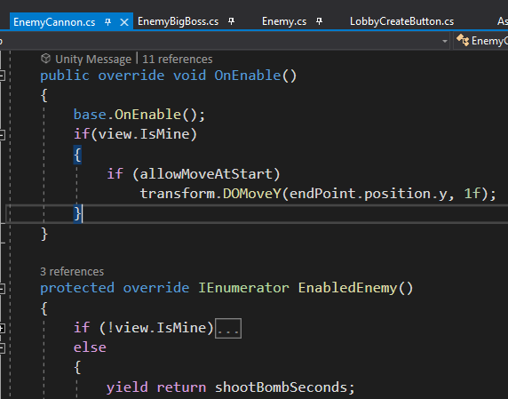
From the result below you can that the cannon enemy stays at its spot and continues to shoot potatos even if the master drops outThe boss enemy also stays at its spot and continues shooting potatos using the cannons after the master drops out.
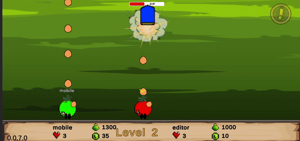
You may have noticed that the enemies and coins gets destroyed along with the master when the master drops out. This is because I am using PhotonNetwork.Instantiate. I changed all of that to PhotonNetwork.InstantiateRoomObject so that the object is based on the room. This allowed this enemies and coins to stay in the game.
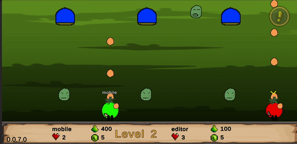
Now let's circle back and tackle the problem with the PotatoEnemyDestroyed property becoming 0 when the master drops out. This is because the properties are local. I am not sending this data over the network. To do that, I applied the same logic that I did to setting the coin and score over the network. However, instead of using Photon.Realtime.Player.SetCustomProperties, the PotatoEnemyDestroyedProperty is a shared data not a individual player data. Therefore, I decided to try using PhotonNetwork.CurrentRoom.SetCustomProperties. I created a new script called PlayerSharedInformation.cs
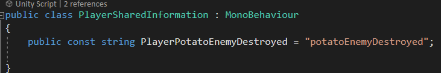
I have a Set function that will set the PotatoEnemyDestroyed over the network
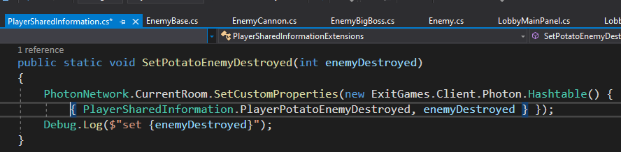
I have a Get function that will Get the PotatoEnemyDestroyed from the network
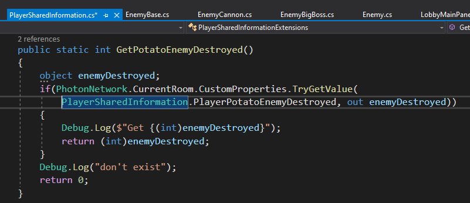
The Get and Set are called from the PotatoEnemyDestroyed property from ScoreManager.cs. When I tested with the editor and mobile, the data is being sent. However, getting the data, it was alway 1 number lower. So instead of having 5 enemies destroyed before AddLevel(), it was 6 enemies destroyed then AddLevel(). This is wrong
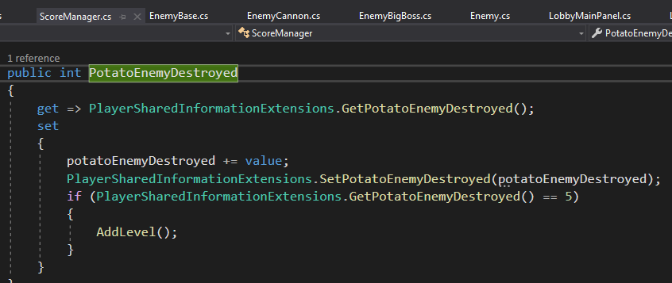
The next thing I tried was add a AddPotatoEnemyDestroyed. This would add the number of enemy destroyed to the current amount and call SetPotatoEnemyDestroyed
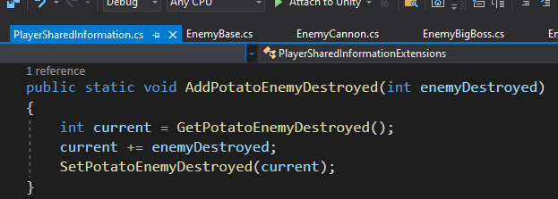
I added OnRoomPropertiesUpdate() function, this is a callback that gets called when the properties changes. I can then set the PotatoEnemyDestroyed property to what is on the network
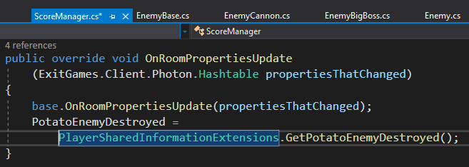
The PotatoEnemyDestroyed property Get and Set implementation is changed back to the original implementation instead of calling functions from PlayerSharedInformation.cs
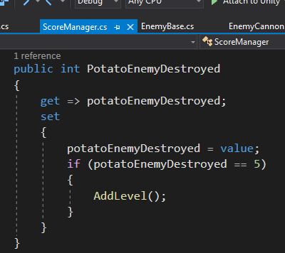
When the PotatoEnemy is destroyed in Enemy.cs, I would call the PlayerSharedInformationExtensions.AddPotatoEnemyDestroyed(1) from PlayerSharedInformation.cs
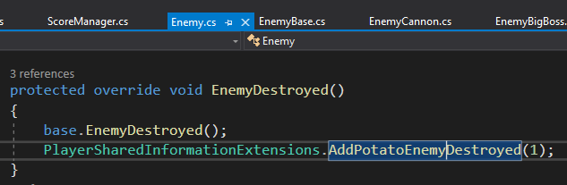
From the result below you can see that when the master drops out, the new master picks up where the number of potato enemy was left off and the level increases at a total of 5 destroyed enemies from both players. Click the youtube video button to watch the full results. The next part- blog 16 can be found hereRecent blogsSee all blogs